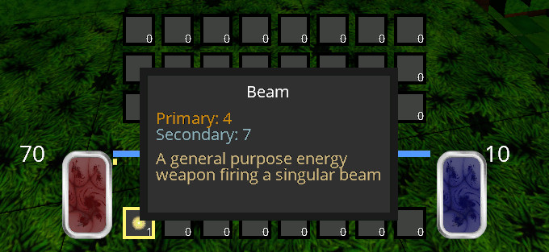
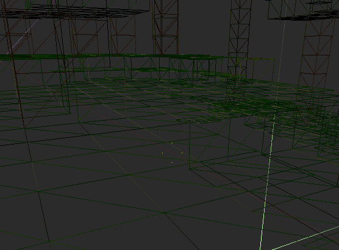
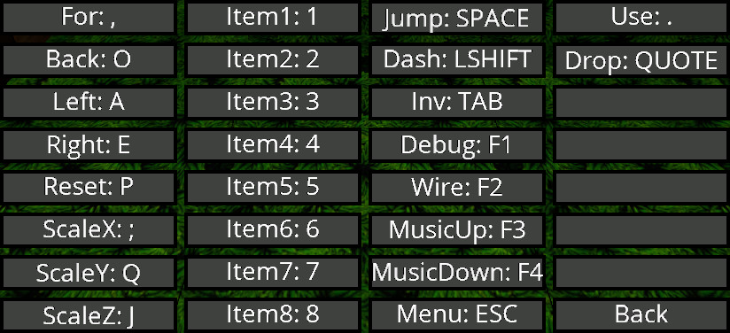

Whoa! It's July and I haven't updated this blog in over a month! What have I been doing? The truth is that I have no idea! As I am writing this, I am reviewing the commit log from the last blog entry until now. I have pushed a commit to this project almost every day and yet I feel like I haven't really achieved anything promising. Therefore I chose to list all of the improvements and let you be the judge.
I added two game modes, Creative and Hardcore. Hardcore is just like normal but you lose all items on death. Creative is more like tetris and a lot harder. Basically blocks are allocated randomly on a fixed grid and you have to combine different block types to generate enough blocks to build structures. At anytime you can fall off the grid and die. I got this idea from a Minecraft mod, but I think it is lacking innovation.
I also added random stat points on crafted items. There are two types of item stats, Primary and Secondary. Primary increases effectiveness of offensive abilities and secondary increases effectiveness of defensive and maneuverability abilities such as double jump and dash. These abilities are unlocked with the Dynamism skill point.
I have fixed many bugs, and you might say that I went of a bug killing spree. I have run the C++ code in numerous analysis programs and believe we might be 99% bug free at this time, which is exciting! Time to make more bugs... I mean features! One of these interesting bugs is that really old integrated ATI chipsets have a bug in the OpenGL shader implementation that never got fixed! I had to write the shaders to be compatible with these old hardware chips and avoid the bug. These shaders still need to run on newer modern graphics cards. I am complaining but the shaders are actually really simple now!
We now have a working menu which you can use to create a new game, load an existing game, delete games and change game modes. I had to refactor alot of code to get this to work and play nice with the rest of the game components. Basically multiple UI elements share the same pool of GPU RAM depending on different UI modes. I can now extend this system to create new UI systems easily.
The code now compiles on clang++-3.5, clang++-6, g++ nearly all versions post 5.4 with no errors or warnings! The makefile got a haircut and I simplified it so that the users can change the C++ compiler and enable numerous build options easily, assuming they understand what the options do.
I also changed the way rendering voxel faces work. The amount of GPU RAM used is much lower now and faster! These rendering changes are in place by default and can also be used with MGL_GS_RENDER enabled which is ultra fast! Notice that hidden faces are no longer rendered. My laptop with integrated intel graphics runs the game like a champ without issue!
I created an icon and a bds.desktop file so you can have a game shortcut on Linux desktops. I also added support for DVORAK key mappings. I also added the ability to change the default key mappings and persist these mappings between saves.
The last thing I did was switch from grid's to octree's for the physics object spatial database. Ray tracing will now be much faster although you can't really tell, maybe if you are running on a toaster. This is lumped in with the numerous bug fixes, refactorings, and general TLC I did to make sure everything is extremely polished and will run without crashing on users machines.
So I guess I have been busy making quality improvements, removing bugs, polishing all areas of the project such as the engine code, the UI code, and the build code. It is time to return to the game! I am excited to reveal that the next feature to go into Beyond Dying Skies is MACHINES! These aren't just any machines but VIRTUAL MACHINES! The hype is real! Say tuned for the next blog post where I will document my thought process on machines and what you will be able to do with them.
Check out last week's development blog here.